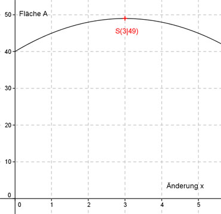

Aufgabe 119 Ein Rechteck hat eine Länge von 10 cm und eine Breite von 4 cm. Die Länge soll um den Betrag x verkürzt und die Breite um x verlängert werden. Bei welcher Änderung x entsteht das größte Rechteck? Die lange Seite verkleinert 10 - x Die kurze Seite vergrößert 4 + x A(x) = (10 - x)(4 + x) A(x) = 40 + 10 * x - 4 * x - x2 A(x) = -x2 + 6x + 40 Dies ist die Funktionsgleichung einer nach unten geöffneten Normalparabel, deren höchster Punkt der Scheitelpunkt ist. A(x) = -x2 + 6x + 40 | :(-1) -A(x) = x2 - 6x - 40 Quadratische Ergänzung: -A(x) = x2 - 6x + 9 - 9 - 40 mit x2 - 6x + 9 = (x - 3)2 -A(x) = (x - 3)2 - 49 |*(-1) A(x) = -(x - 3)2 + 49 Scheitelpunkt abgelesen: S(3|49) Die Scheitelpunktkoordinaten bedeuten: Bei einer Änderung von x = 3 cm, entsteht die größte Rechteckfläche A(3) = 49 cm². A(3) = (10 – 3)(4 + 3) cm² = 49 cm² 